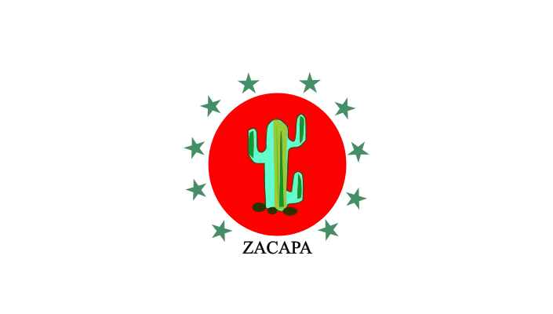
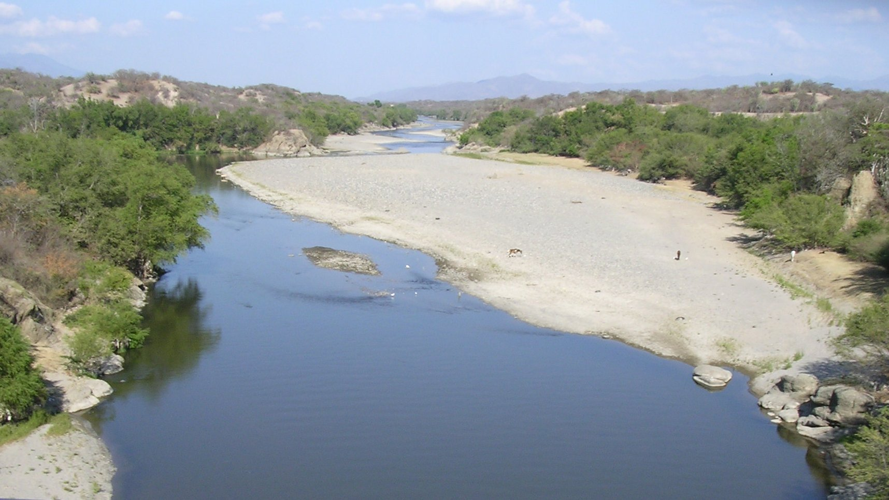
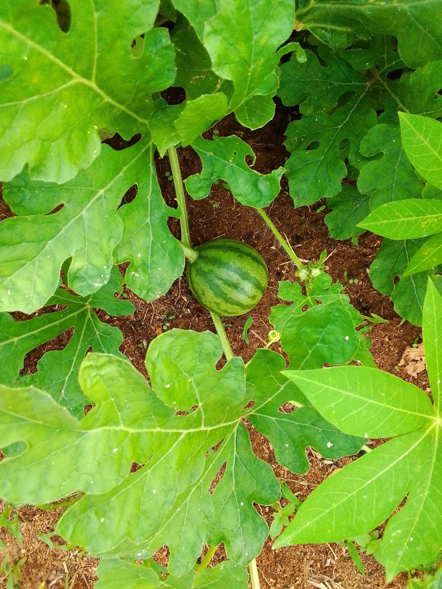
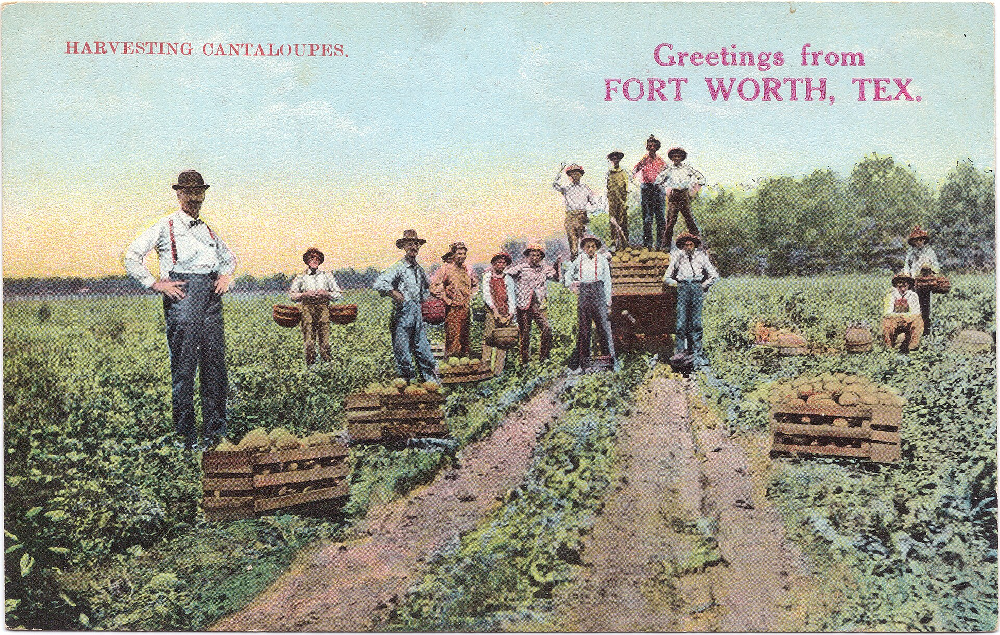
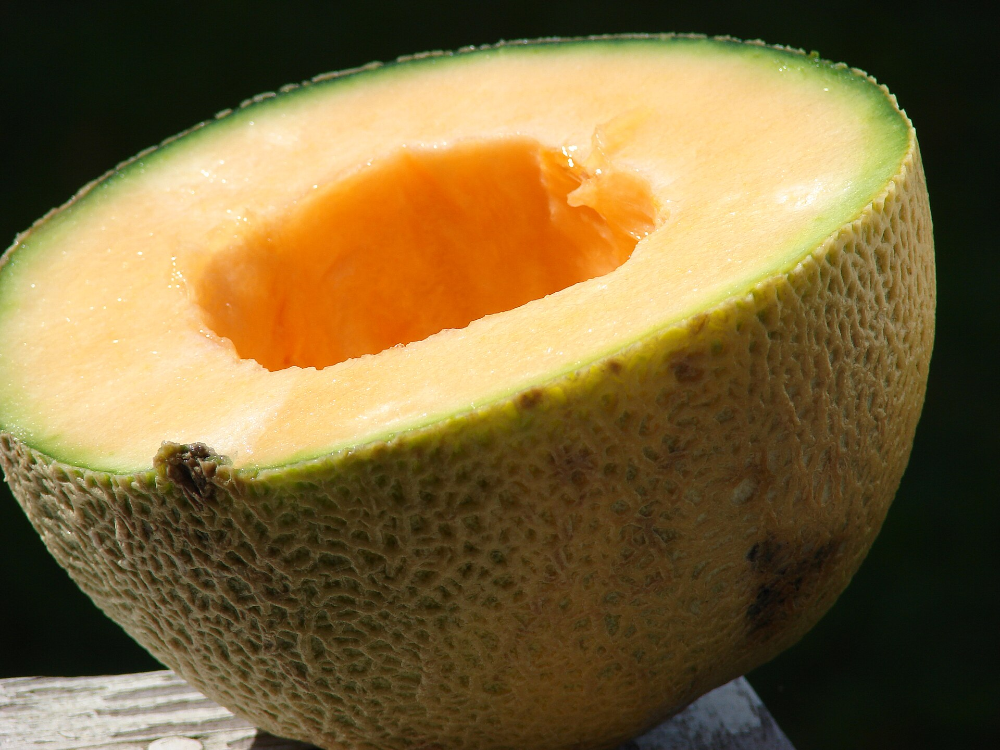
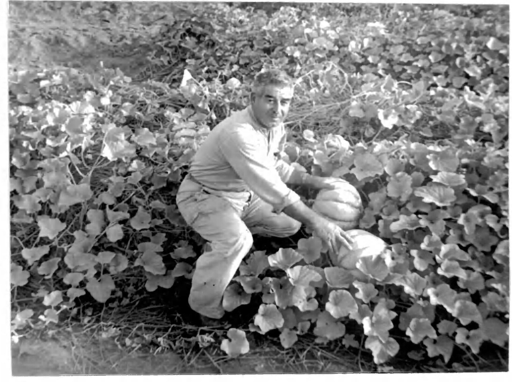

El manejo del agua es clave para sostener cultivos como melón y sandía.
Gomitas artesanales de melón · Zacapa, Guatemala
Gomitas artesanales de melón · Zacapa, Guatemala
Inspirada en el Valle de La Fragua: tierra cálida, riego cuidadoso, surcos verdes y cosecha manual.

Zacapa, Guatemala
El melón se asocia al clima cálido de oriente, donde el riego y el cuidado del suelo ayudan al cultivo.


El manejo del agua es clave para sostener cultivos como melón y sandía.
Zona de riego vinculada a Teculután, Estanzuela, San Jorge y Zacapa.
Zacapa destaca como el departamento con mayor área sembrada de melón.




 1
1
Preparación en tierra cálida.
2
Manejo del agua en La Fragua.
Corte manual.
4
Color y frescura.

Tomamos como inspiración el melón zacapaneco: fresco, dulce y ligado al trabajo agrícola de Guatemala.
Contexto agrícola: MAGA/DIGEGR. Fotos de referencia: Wikimedia Commons.